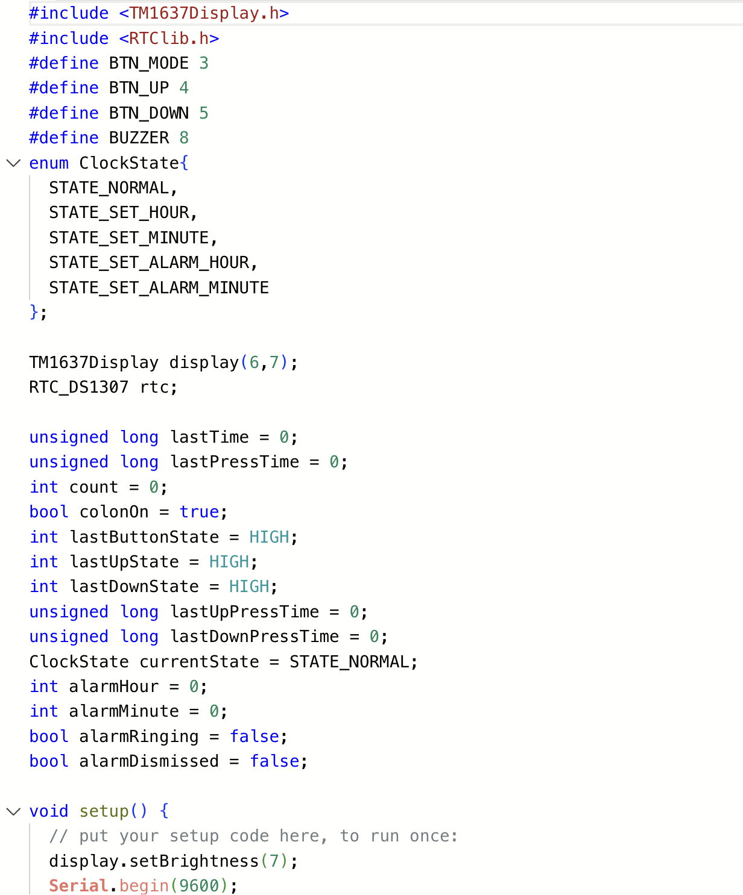

Arduino digital alarm clock
A digital clock with a settable alarm, built around an Arduino Nano. My first engineering project of my own.

Overview
For my Discovery Project I built a digital alarm clock on an Arduino Nano. It's the first thing I've built on my own as an EE student, and I started it with basically no experience. I wrote and tested the firmware in the Wokwi simulator first, kept every version on GitHub, and now I'm putting the real circuit together on a breadboard. After that I want to design a PCB for it.
The Problem
Before Georgia Tech I had never built an electronic device. I wanted one project that would make me go through the whole process at least once: writing firmware, laying out a circuit, debugging it, and ending up with real hardware.
An alarm clock seemed like the right size. Everyone knows what it should do, but it still has real requirements. It has to keep time even when it's unplugged, show the time clearly, let you set both the time and an alarm with only a few buttons, and go off at the right minute. So my goal was simple: take an everyday device from an idea to working hardware, starting from zero.
The Process
Modeling it in Wokwi
I didn't want to buy parts before I knew the design worked, so I started in Wokwi, an online electronics simulator. The circuit has four main parts. A DS1307 real-time clock module keeps the time. A TM1637 4-digit display shows it. Three buttons (Mode, Up, and Down) let you set things. A buzzer is the alarm. I modeled it on an Arduino Uno, which has the same ATmega328P chip as the Nano I'm using for the real build.
Writing the firmware as a state machine
The clock is always in one of five states: showing the time, setting the hour, setting the minute, setting the alarm hour, or setting the alarm minute. Mode moves to the next state, and Up and Down change the number. On top of that, the code debounces the buttons, blinks the colon once a second, and keeps track of whether the alarm is ringing or has been dismissed. We were covering finite state machines in ECE 2020 at the same time, so it was a good chance to use something from class right away.

Using GitHub
I pushed my code to GitHub as I went. That gave me a record of how the project changed and a set of checkpoints I could go back to whenever an edit broke something, which happened more than once. It's a habit I'm keeping for every project.
Debugging
A lot of the code didn't work the first time, especially the alarm logic. I fixed it by changing one thing at a time, rerunning the simulation, and watching what the clock actually did versus what I expected. It was slow, but my code got noticeably cleaner because of it.
Moving to real hardware
Once the simulated version worked, I bought the actual parts and started wiring them onto a breadboard. This is where the soldering and multimeter practice from Solar Racing comes in.
The Outcome
The firmware is done and works in simulation. The clock keeps time, the set modes work, and the alarm goes off and can be dismissed. The breadboard build is in progress.
Next I'll draw a proper schematic, design a PCB, and order my own board. The end goal is a finished clock that I actually use every day.
What I Learned
On the technical side, I learned to write and simulate firmware, structure a program as a state machine, and use version control. The bigger thing for me was that I didn't need to know everything before starting. I figured out most of it by getting stuck and working my way out. It also confirmed that I like the hardware side of EE, which is part of why I'm heading toward circuits and chip design.